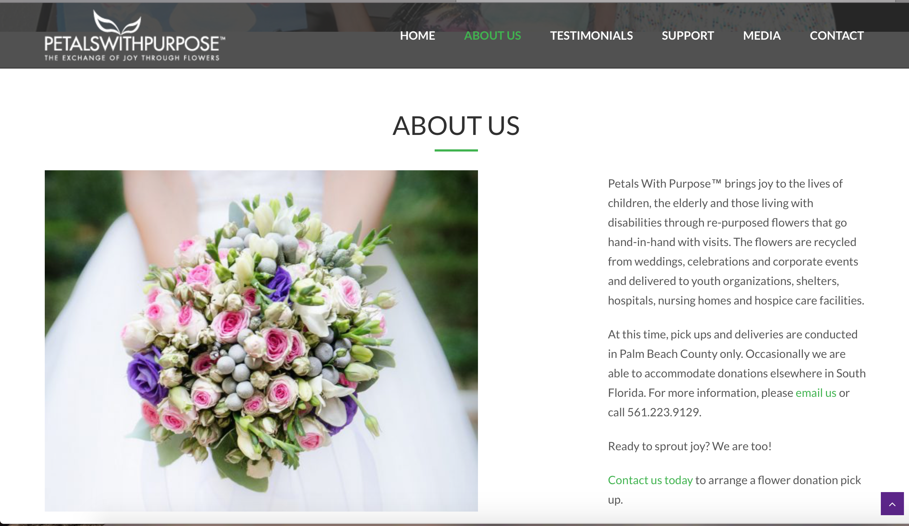

Research
I conducted research on The Bloom project that included primary research on the client themselves and secondary research on other outside sources.
Primary Client Research
Research from The Bloom Project website
The Bloom Project is a non-profit that donates fresh bouquets of flowers to hospice and palliative care patients. This provides the patients with fresh flowers on a weekly basis, bringing beauty and giving joy to them every day. This is accomplished by the coordination of donors, sponsors, affiliates and volunteers in several different positions. What I wanted to get out of this initial research was to figure out how The Bloom Project can more easily engage people in becoming donors and/or volunteers.Sponsorships & Partnerships
Companies and corporations donate funds to support project expenses and staffing needs. Sponsorships are also available at various levels. Floral partners donate fresh flowers (and floral products) to The Bloom Project on a weekly basis.
Affiliates
The Bloom Project Affiliate Program enables hospice and palliative organizations nationwide to build and operate a Bloom Project in their own community.
Getting Involved
The Bloom Project features lots of different ways to get involved in their organization, including being a volunteer driver, volunteering to arrange flowers and many donation opportunities.
Secondary Research
Recent News
Beginning my secondary research, I decided to look over news articles dealing with The Bloom Project.
This article by The Orgonian talks about how The Bloom Project put together bouquets for hospice patients on Valentines day. It states that The Bloom Project’s mission statement is: To give a person nearing the end of his or her life something pleasant to look at, and something to talk about other than the obvious.
I also came across a KGW8 article about The Bloom Project. This article pretty much just thanks The Bloom Project for the work they have been doing for a decade. There is also a video attached that includes an interview with the founder Heidi Berkman. Heidi talks about goals for the company as well as what The Bloom Project means to her.
When researching other ways that flowers can be donated, I came across a People article titled “Harry and Meghan’s Royal Wedding Flowers Were Turned Into Bouquets for Hospice Patients”. This opened my eyes to a new way that people can get involved in this organization. I love the idea of newlyweds using some of their special day to brighten someone’s day who might not be in a positive place.

After finding out that donating wedding flowers was even a possibility, I wanted to find out if there were organizations that were simply doing this. I found Petals with Purpose, an organization that specifically showcases that they do in fact use donated flowers from weddings. I think it could be very beneficial to The Bloom Project to showcase this audience more clearly on their website.
Random Acts of Flowers
I wanted to also look into another organization that is similar to The Bloom Project to compare it to. Random Acts of Flowers is a more successful recycled flowers organization website. There are definitely things that could be improved on their website, but their menu is easy to navigate and their call to actions are clear. Something I would implement into The Bloom Project’s website is the way Random Acts of Flowers organizes their information. The main page is neither overwhelming with information or lacking what is needed to let the viewer know what the organization is about.
Random Acts of Flowers clearly shows the different ways to get involved with these few buttons. Whereas, The Bloom Project has icon buttons that don’t make sense. By incorporating clear and easy to navigate buttons to The Bloom Project’s website, help viewers to know how to take the next step in taking action.
Interviews
For my interviews I did not manage to get in touch with anyone from The Bloom Project, because I was told that this was a very busy season for them. However, I conducted three user interviews that opened my eyes to some very important things to include on the website.
User interviews
Ashley Stone
This screen shot is my interview with Ashley Stone, a graphic design major from Anderson University and a beautifully creative person.
{kind=link}
This interview in particular shined some light on the important things to know when creating a website for a younger audience. Ashley said that she wouldn't check the website often but would click on it if it was linked in an Instagram bio. This tells me that mobile viewing is very important when looking at The Bloom Project's website. From my interview with Ashley I learned that it is important to show people that they are cared for not only in the act of giving flowers but also through words. Perhaps this could open up a different part of The Bloom Project where they focus on the cards they might send with the flowers. I also learned that it is important for the call to action to be very obvious so that it is easy to get involved if that is what you desire to do. It is important to show the effects of people receiving the flowers. How much does it actually effect these people in hospice? Photos and real-life stories showcased on the website could help with this.
Lydsey Brown
This screen shot is my interview with Lyndsey Brown, an early education major with a minor in special education from Anderson University.
{kind=link}
For this interview, it was clear that for viewers, an easy to follow calander is important to keep up with events and volunteer opportunities. What I learned from Lyndsey’s interview is that it is important to visit and nice to actually get to know the person who would be receiving these flowers. You never know, they might not have any friends or family left to spend their last years or even months with. I also learned that organization and showcasing a calendar with clear dates is important. According to Lyndsey, it is a lot easier to navigate and understand when events are taking place when there is a calendar. Also knowing what is required of a volunteer is something that could be showcased a little better. A lot of times you don’t really know what exactly you’ll be doing when you go to volunteer somewhere, so a little insight to that would be helpful to include.
Sandy Hance
Finally,This screen shot is my interview with Sandy Hance, a Phsyical Therapy Assistant at Spartanburg Regional and my mother.
{kind=link}
Interviewing my mom helped me understand what older people actually appreciate and what brightens the days of people in hospice. From my mom I learned a little more about what hospice actually is. There is at home hospice, so this made me wonder if The Bloom Project caters to those people as well as the other people who may just be part of other hospice care places. My mom also said that people in hospice only get medications for whatever pain their feeling. This means that they have agreed to not do CPR and that they are pretty much just supposed to feel comfort and ease. This is why, some patients do not want to do Physical Therapy, and some do. Physical therapy either helps them or they don’t feel like doing it, so they don’t have to. She also mentioned that people are mostly what brighten their day if they’re up to it. This is one reason I think showcasing a lot more photos on the website will be more impactful on the audience. It will show people what they are donating or volunteering their time to.